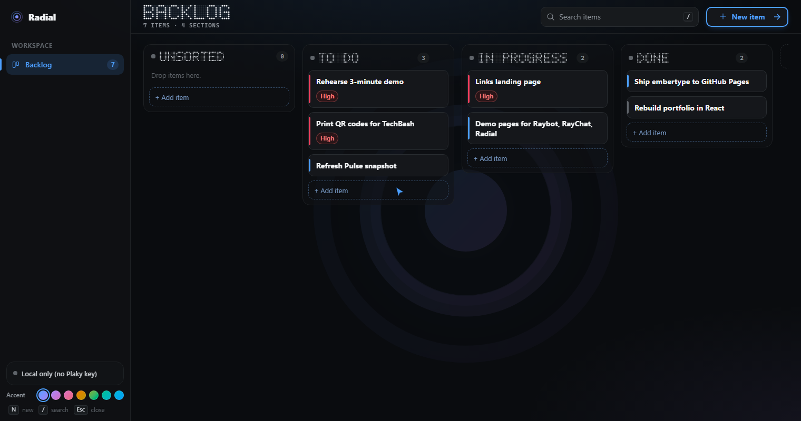

Project
Radial
Local-First Backlog Tool

Shown with sample tasks. Radial runs on my own machine, so this is a screenshot, not a live copy.
What it is
A local-first backlog tool that mirrors from, and pushes to, Plaky, themed to match Raybot's dashboard. Pulls every space, board, and item your Plaky API key can see into its own SQLite database on an interval, then lets you build a real backlog against a board's actual sections, with no invented status enum. Built with FastAPI, SQLite, and vanilla JS, no build step, no framework.
What it does
- Pulls Plaky every 5 minutes, plus a manual "Pull from Plaky" button
- Drag cards between columns; the columns are the board's real Plaky sections
- Pushes a locally created item into Plaky as a real item, in the section you put it in
- Works with no Plaky key as a plain local kanban
- A sync log of every pull and push, success or failure